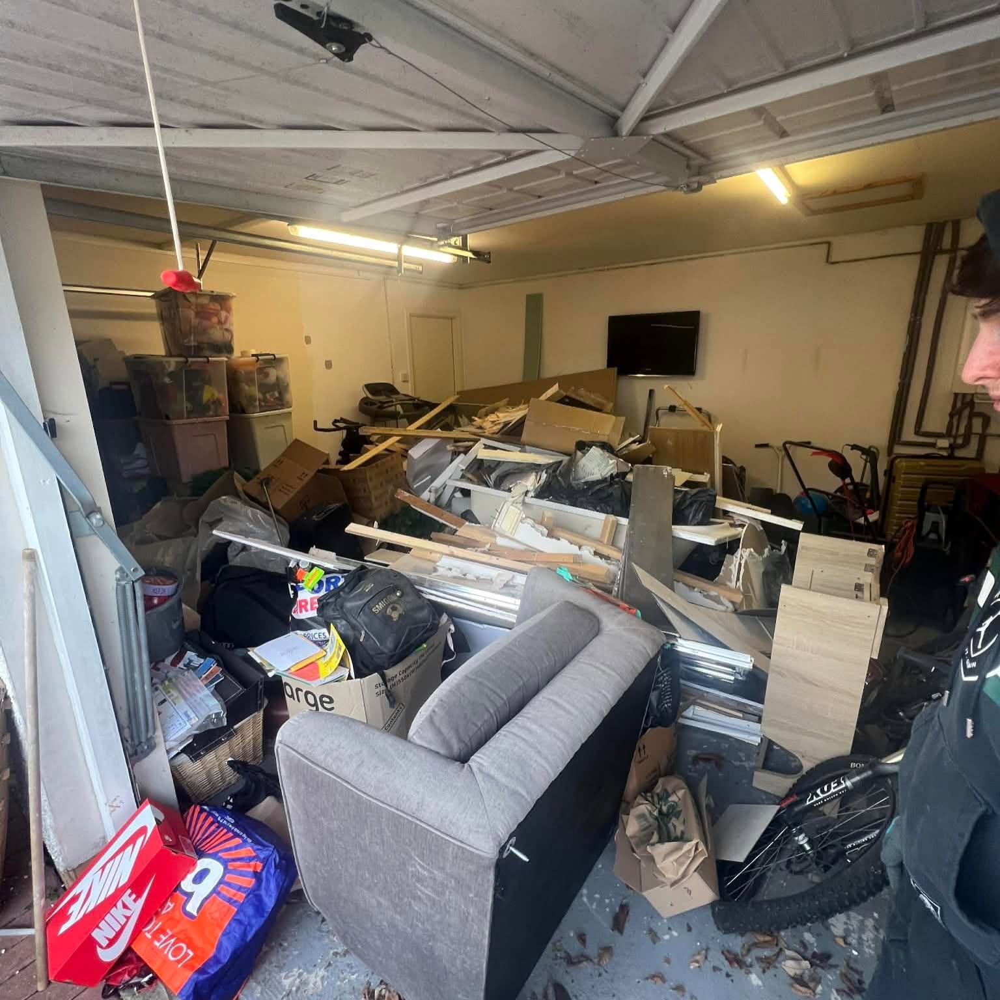
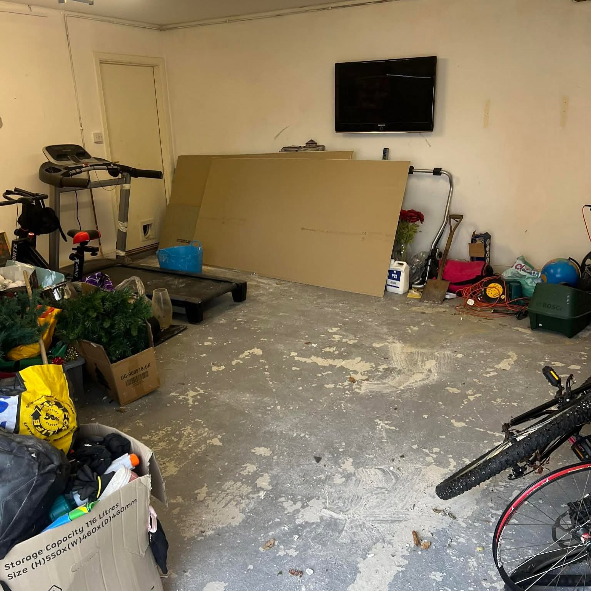
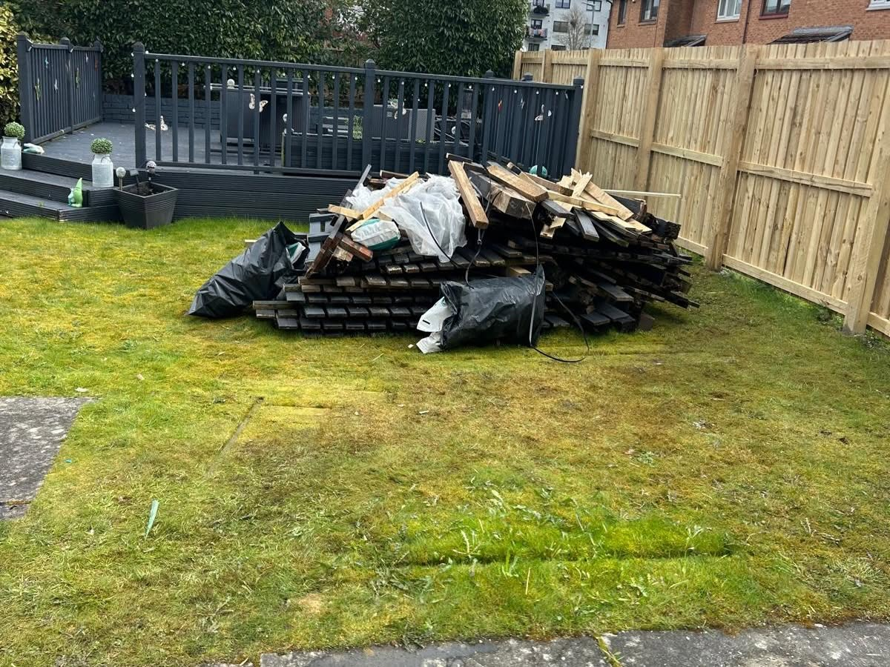
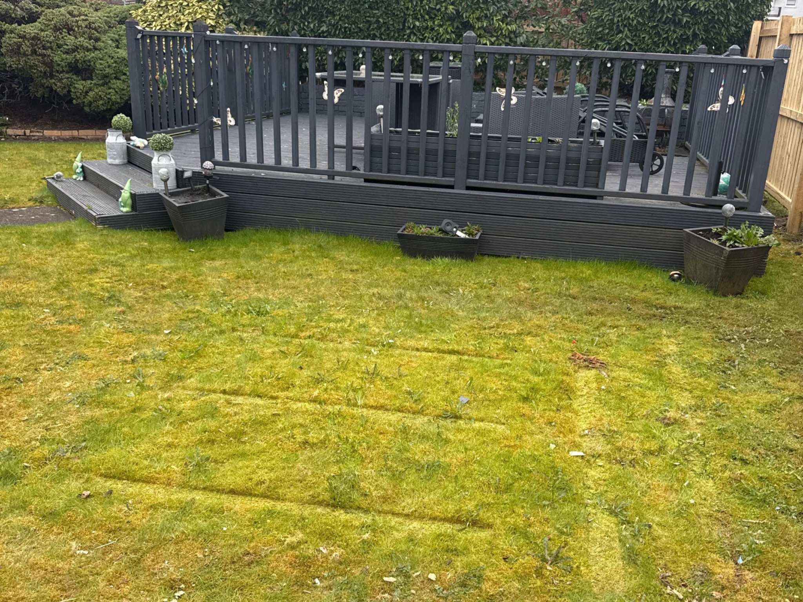
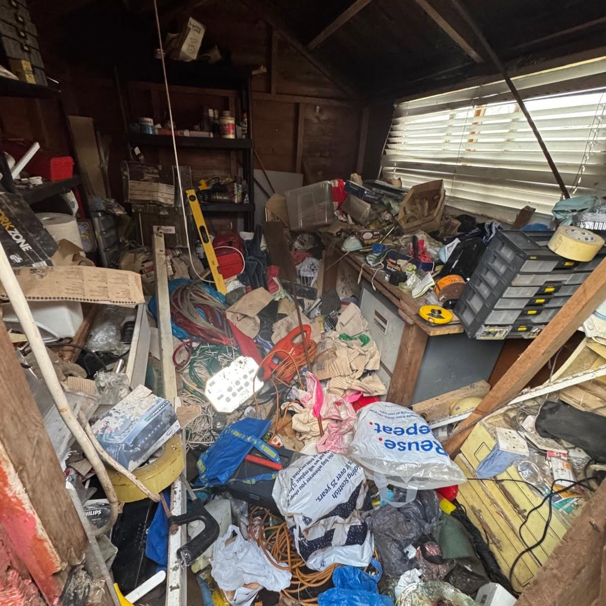
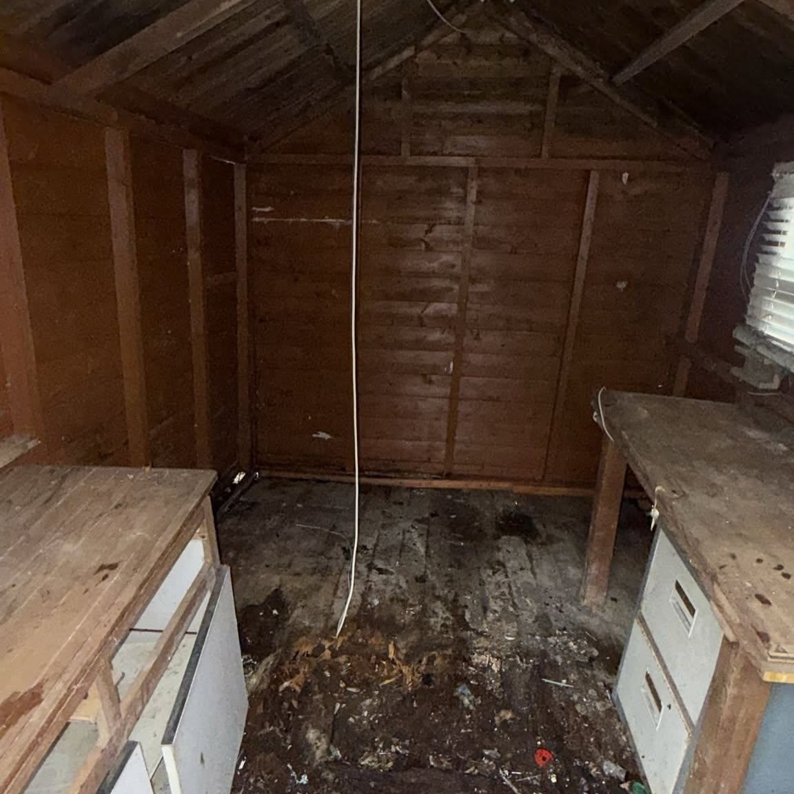
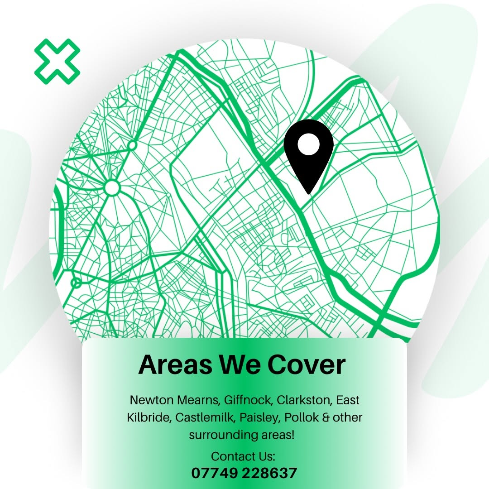

Household Waste
Furniture, appliances, general rubbish and bulky household items removed quickly.
Household, garage, builders, garden and commercial waste cleared across Glasgow and surrounding areas. Send a photo, get a quote, and we’ll take it from there.
From single bulky items to full clearances, Rossco’s Rubbish handles the lifting, loading and removal so you can get the space back without the hassle.
Furniture, appliances, general rubbish and bulky household items removed quickly.
Full clear-outs for garages, sheds and storage spaces that have got out of hand.
Wood, rubble, renovation waste and site clear-up collections for domestic and trade jobs.
Timber, fencing, green waste and outdoor rubbish removed from gardens and renovation projects.
Flexible rubbish removal for shops, businesses, landlords and local trades.

When a garage, shed or room is full of unwanted items, we can clear the lot. Send over a few photos and we’ll give you a straightforward quote based on what needs removed.
These are actual clearance jobs. No stock photography and no dressing things up — just the space before collection and the result afterwards.

Bulky household and renovation waste removed, leaving the garage usable again.
Consistent, easy-to-scan project photography instead of oversized images taking over the page.


Timber and renovation waste removed so the garden is clear and usable again.


The quickest way to get a quote is to WhatsApp a few photos of the rubbish and your location.
Show us what needs removed and tell us where you are.
We’ll price the job based on the type and amount of waste.
Choose a suitable day and time. Same-day can be available.
We load the waste and leave the area tidy when we’re done.

Rossco’s Rubbish covers Glasgow and nearby areas for household, commercial, garden and renovation waste collections.
Most jobs can be quoted from photos, which makes getting started quick and easy.
Most household, commercial, garden and renovation waste, including furniture, appliances, wood, rubble and general rubbish.
Yes, depending on availability and location.
Glasgow including Clarkston, Giffnock, Paisley, Pollok, East Kilbride and surrounding areas.
WhatsApp a few clear photos of the waste plus your location and we can price it from there.